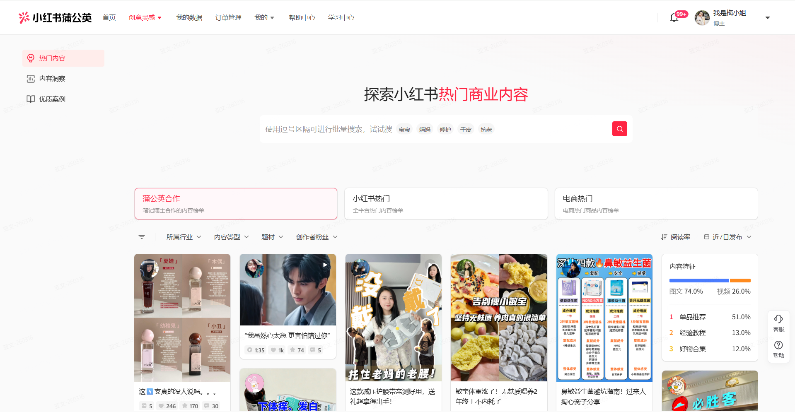
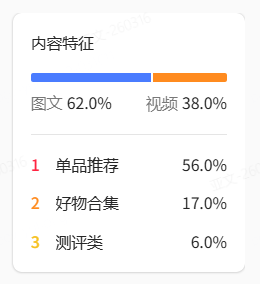
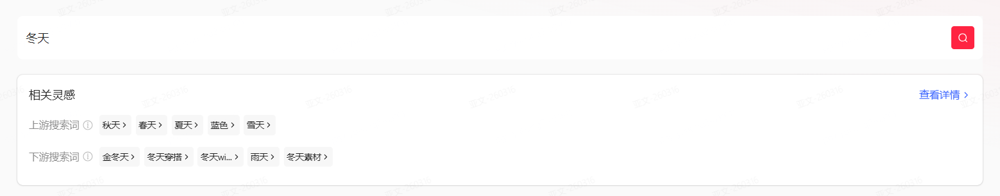
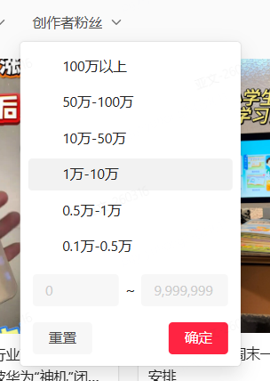
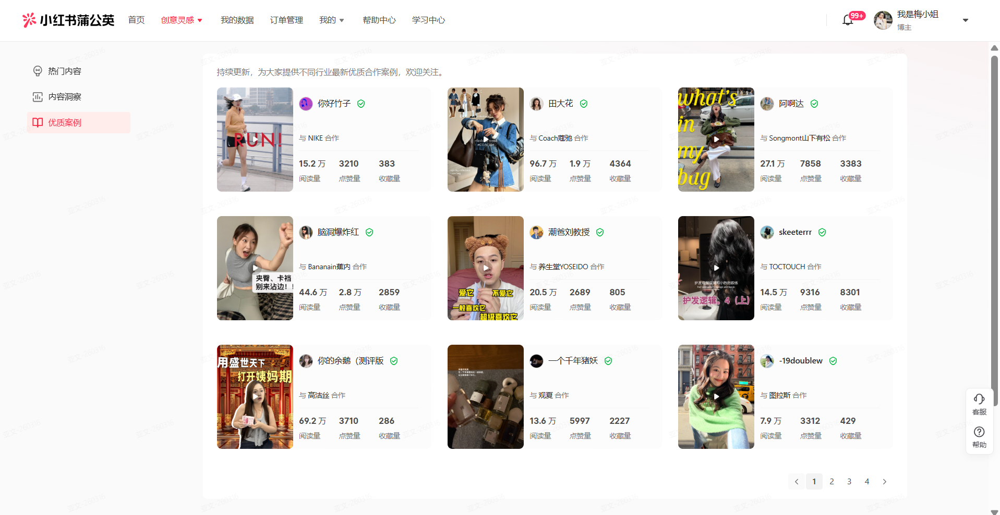
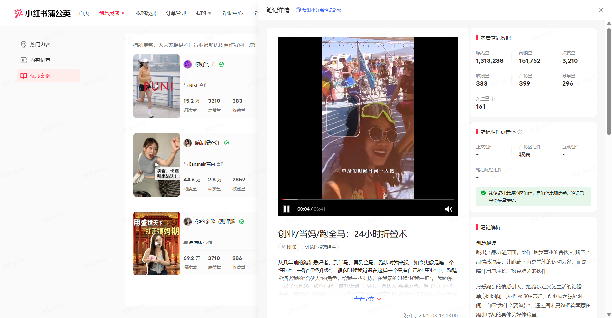
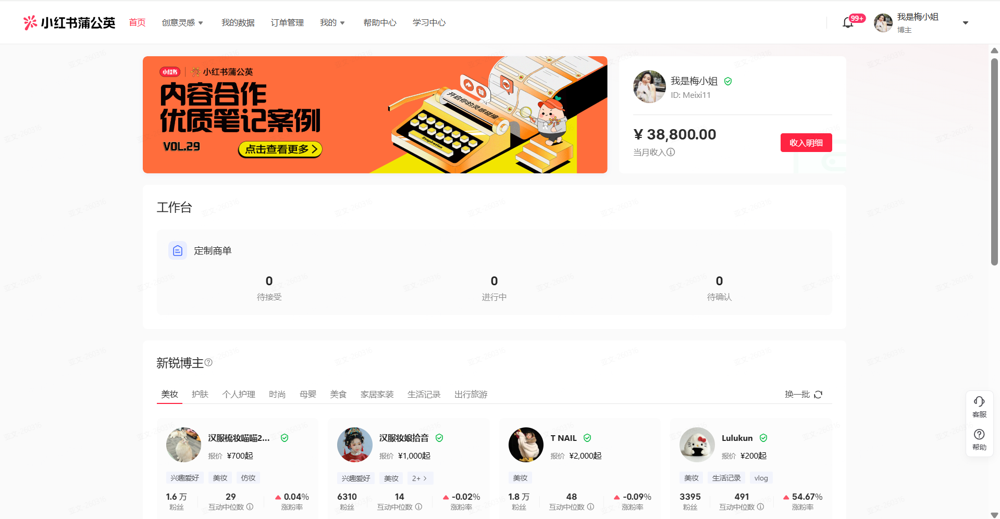
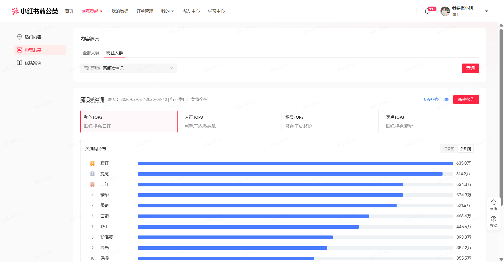
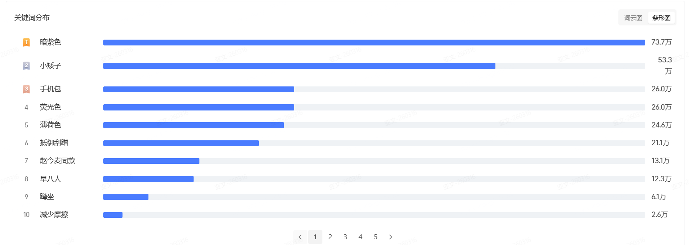
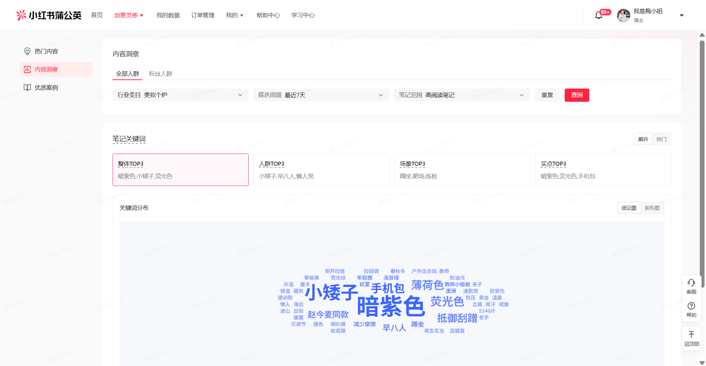

从创作工具切入，帮图文博主在写商单时找灵感、找对标、做复盘。
蒲公英里 14% 的优质笔记贡献了近三成流水。把「好内容」做成产品，就是把这条供给做厚。
博主接一篇商单，通常要走「找灵感 → 看样板 → 发后复盘」三步。产品的三个模块，正好一步接一步地接住。下面每一步都是已上线 / 已下放的真实界面。


内容特征 图文/视频占比、题材分布
相关灵感 上下游搜索词拓选题
粉丝量召回 按粉丝量级筛可对标内容

笔记详情 拆解单篇优质笔记的表现数据
产品首页 蒲公英工作台，案例入口在此

关键词分布 词云 / 条形图看热词量级
全部人群 全量视角对照粉丝人群从调研定方向、设计定架构，到策略定迭代、数据定下一步，四段各有明确的产出。
产品能不能落地，往往卡在这种没有标准答案的地方。这里放两个我实际参与判断的点。
好内容的数据能力本想直接复用现有工具，研发评估后发现直接算算力扛不住。我把两条路径的成本摆开对比，帮团队把一期的实现方案定下来。不是我拍板，而是把权衡讲清楚、让决策有依据。
好内容不能靠拍脑袋。我参与设计了一套判定方法：先用「三感六度」定分级标准，再从优质样本反向归因出共性，反哺成博主能照着做的建议。整套建模方案已设计完成。
基本满足「三感六度」的优质内容判定线。
完美契合三感六度，或达标且在创意 / 审美任一维度为标杆。
从笔记流量宽表取各行业近 30 天的优质笔记，选综合评分 Top 样本。
结合「3 天短周期数据口径」与市场团队「三感六度」定性标准。
提取阅读、点击、互动、种草流转、进店、封面等字段做单篇归因。
跨样本总结共性规律，转成博主可直接参照的创作建议。
背景说明这件事的杠杆有多大，结果是一期实际跑出的正向数据。
口径说明：上方渗透率 7%→10% 为一期全量口径。另有 12/16 至 1/6 的 100 人内测小范围复盘：目标人群渗透 40%（累计 UV / 内测用户）、整体满意 89%，口径不同，不与全量混用。
调研支撑：定性访谈 8 位博主 + 3 家 MCN，定量回收有效问卷 1762 份（近 60 天有蒲公英商单）。